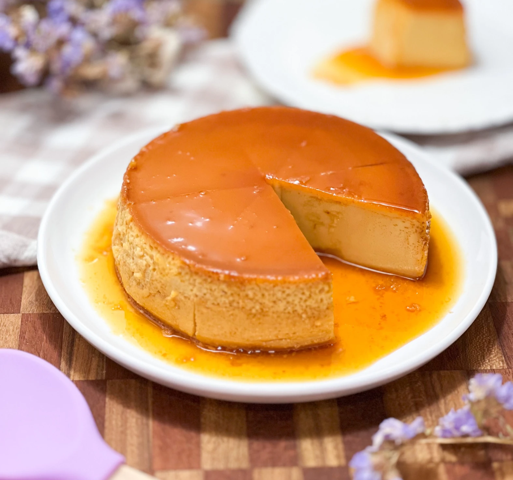

Haz el mejor Quesillo Venezolano
Prepárate para un viaje culinario lleno de sabor y tradición venezolana. Hoy te traigo la receta del delicioso quesillo, un postre cremoso a base de huevo y leche que te hará suspirar. Conocido como "quesillo" por los agujeros que se forman en este flan mientras se cocina. ¡Prepárate para endulzar tu día con este manjar!
Aquí te va una receta fácil y deliciosa de un buen quesillo venezolano

Manos a la cocina
- Fase 1
- Fase 2
- Fase 3
- Fase 4
Comencemos preparando el caramelo.Coloca el azúcar y el agua en el molde destinado para el quesillo, es decir en una quesillera, y calienta a fuego lento hasta que el azúcar se disuelva y adquiera un tono dorado. Retira del fuego y con mucho cuidado, esparce el caramelo por las paredes del molde. Deja reposar y vamos a la fase 2
En una licuadora, combina los huevos, la leche condensada, la leche líquida, la leche en polvo y la vainilla. Mezcla a velocidad media-alta durante 2 minutos hasta obtener una mezcla homogénea.
Vierte la mezcla en el molde con el caramelo ya preparado. Tapa la quesillera con su tapa si el molde no posee una, entonces cubre con papel aluminio. Lleva el molde al horno a baño María y hornea durante 45 minutos a 190ºC.
Pasado los 45 minutos, haz la prueba del palillo. Verifica que tu quesillo esté listo cuando introduzcas un palo de altura y el mismo salga sin residuos. De ser así, retira con cuidado y deja reposar sobre una rejilla. Posteriormente, refrigera el quesillo durante al menos dos horas.Antes de servir, despega suavemente los bordes del flan del molde y desmóldalo estando bien frío.
Desmolda con cuidado. Coloca sobre la quesillera abierta, un plato llano. Rápida y cuidadosamente, voltea el quesillo, sentirás como caerá encima del plato. Levanto poco a poco el molde ¡y tarááááán! el quesillo perfecto ya estará listo para ser devorado.
Ingredientes
Te dejo los ingredientes y las cantidades.Debes saber que estas cantidades son para una quesillera de 16cm de diámetro.
- 1/2 taza de azúcar blanca para el caramelo
- 1 cucharada de agua para el caramelo
- 4 huevos grandes
- 250 ml de leche condensada
- 250 ml de leche líquida
- 3 cucharadas soperas de leche en polvo
- 1 1/2 cucharada de esencia de vainilla
- 1 cda de ron
Secretos para un quesillo perfecto
- La receta original del quesillo no lleva leche condensada, se hace solo con leche entera. Pero debo confesar que la leche condensada le aporta un sabor increíble a este postre y además la textura es más sedosa. Por lo tanto si quieres un quesillo cremoso, entonces usa una buena leche condensada, con un porcentaje de grasa alto para mayor cremosidad.
- La leche en polvo es clave en esta receta. No te saltes este ingrediente, ayudará a que tu quesillo quede cremoso y con más cuerpo.
- Si te gusta que el quesillo sea cremoso pero al mismo tiempo tenga huecos,entonces aumenta el tiempo del licuado. Mientras más licúes, más cremoso queda, además, se formará una espuma que al cocinarse formará los huecos que tanto te gustan.
- El ron potenciará el sabor del quesillo y además le dará el toque de locura que necesita este postre.